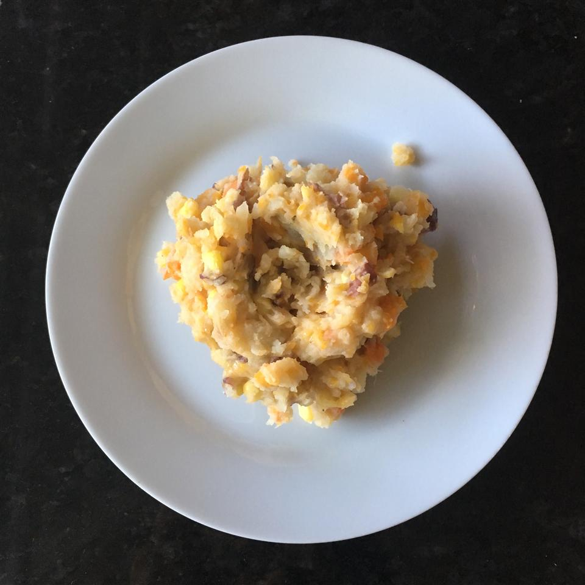

Cowboy Mashed Potatoes

Description
Delicious Cowboy Mashed Potatoes.
Ingredients
- 1 pound red potatoes
- 1 pound Yukon Gold (yellow) potatoes
- 1 fresh jalapeno pepper, sliced
- 12 ounces baby carrots
- 4 cloves garlic
- 1 (10 ounce) package frozen white corn, thawed
- ¼ cup butter
- ½ cup shredded Cheddar cheese
- salt and pepper to taste
Steps
- "Place red potatoes, yellow potatoes, jalapeno pepper, carrots and garlic cloves in a large pot. Cover with water, and bring to a boil over high heat. Cook 15 to 20 minutes, or until potatoes are tender. Drain water from pot."
- "Stir in corn and butter. Mash the mixture with a potato masher until butter is melted and potatoes have reached desired consistency. Mix in cheese, salt, and pepper. Serve hot."